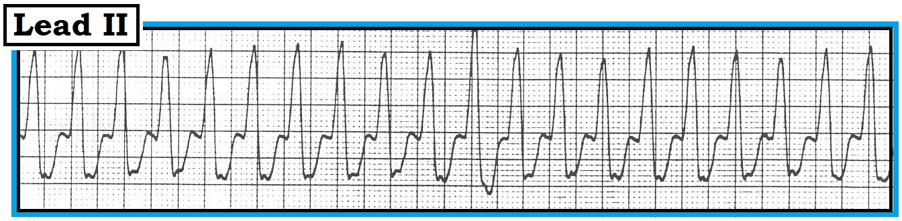
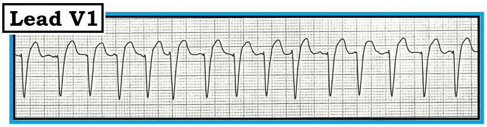
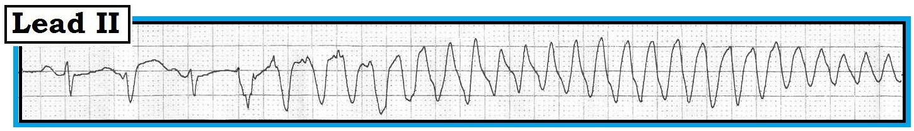
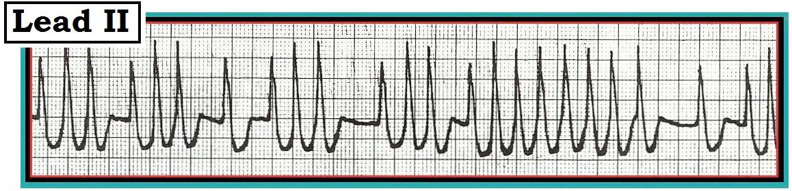
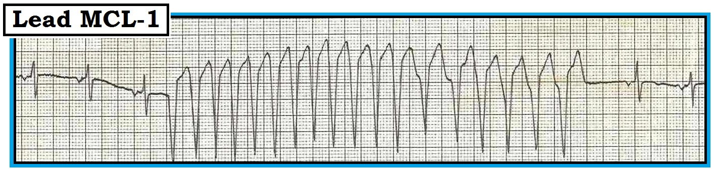
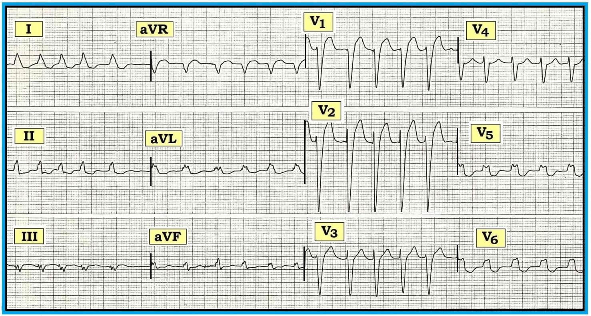
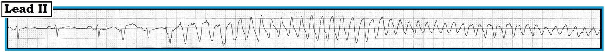
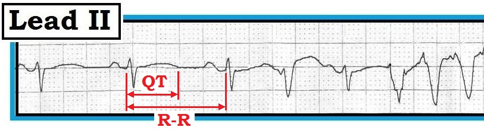

Ôn tập đọc điện tâm đồ – Số 36 (WCT - VT - Rung nhĩ - VT không đều - WPW - Nhịp nhanh QRS rộng)
Một trong những nhiệm vụ khó khăn nhất đối với người làm cấp cứu là đánh giá và xử trí bệnh nhân có nhịp nhanh QRS rộng ổn định — WCT (Wide-Complex Tachycardia). Khi phức bộ QRS rộng — nhịp đều — và không thấy sóng P – thì chẩn đoán được mặc định là nhịp nhanh thất VT (Ventricular Tachycardia) (Hình 1).


Ở bệnh nhân có bệnh tim nền — VT gặp nhiều hơn hẳn so với nhịp nhanh trên thất SVT (SupraVentricular Tachycardia) kèm hoặc blốc nhánh có từ trước hoặc dẫn truyền lệch hướng. Vì lý do này, và vì VT có thể đe dọa tính mạng — VT luôn phải được mặc định là nguyên nhân của một WCT đều cho đến khi chứng minh được điều ngược lại (Xem ECG Blog #23 để ôn lại cách tiếp cận một WCT đều).
- LƯU Ý: Một số bệnh nhân dung nạp VT tốt đến bất ngờ. Những bệnh nhân này có thể vẫn tỉnh táo hàng giờ (hoặc lâu hơn) dù đang trong VT kéo dài. Vì vậy — việc thấy bệnh nhân tỉnh táo với huyết áp bình thường (hoặc thậm chí tăng) hoàn toàn không loại trừ khả năng nhịp đó là VT bền bỉ.
----------------------------------------------------------------
Chẩn đoán các nhịp WCT càng trở nên khó khăn khi nhịp không đều và không thấy hoạt động nhĩ xác định được trong cơn nhịp nhanh. Bốn ví dụ như vậy được trình bày dưới đây ở Hình 1, 2, 3 và 4. Hãy hình dung bệnh nhân ổn định về huyết động trong mỗi trường hợp, và bạn buộc phải đưa ra chẩn đoán mà không có điện tâm đồ 12 chuyển đạo ghi trong cơn nhịp nhanh. Hãy ghép các nhịp ở Hình 2-đến-5 với các lựa chọn trả lời sau:
a) Nhịp nhanh thất.
b) Rung nhĩ kèm blốc nhánh.
c) Rung nhĩ kèm WPW.
d) Xoắn đỉnh (Torsades de pointes).
----------------------------------------------------------------
4 nhịp WCT không đều: Hãy ghép 4 nhịp WCT không đều dưới đây (ở Hình 2-đến-5) với một trong 4 lựa chọn trả lời ở trên:
----------------------------------------------------------------


----------------------------------------------------------------


----------------------------------------------------------------


----------------------------------------------------------------


----------------------------------------------------------------
LƯU Ý CHUNG: Mặc dù chẩn đoán xác định từng nhịp trong 4 nhịp này là khó do không có các bản ghi trước đó và không có điện tâm đồ 12 chuyển đạo ghi trong cơn nhịp nhanh — người đọc vẫn nên đưa ra được một chẩn đoán có xác suất cao cho mỗi dải nhịp. Làm được điều đó thường sẽ quan trọng về mặt lâm sàng — khi có thể không đủ thời gian để khai thác thêm bệnh sử — so sánh với các bản ghi trước — và ghi điện tâm đồ 12 chuyển đạo trong cơn nhịp nhanh. Lựa chọn điều trị tối ưu thay đổi rất nhiều tùy theo WCT không đều đó nhiều khả năng là gì.
----------------------------------------------------------------
TRẢ LỜI cho Hình 2: Tuy khó nhận ra — nhịp ở Hình 2 thực ra không đều hoàn toàn. QRS rộng. Thỉnh thoảng thấy đường nền gợn sóng — nhưng không có sóng P rõ ràng. Vì vậy chúng tôi rất nghi ngờ chẩn đoán là rung nhĩ (AFib) — ở đây với đáp ứng thất nhanh.
- Mặc dù VT không phải lúc nào cũng là một nhịp đều tuyệt đối — nó thường không thay đổi từ nhát này sang nhát kế tiếp như thấy ở đây. Đây là dấu hiệu gợi ý mạnh chẩn đoán AFib. Dù vậy — ví dụ này làm nổi bật điểm: khi AFib nhanh — sự thay đổi khoảng R-R giữa nhát này và nhát kế tiếp có thể rất ít (và đôi khi cần dùng compa đo để xác nhận).
- Chúng tôi nói đáp ứng thất của AFib trong ví dụ này là “nhanh” — vì các khoảng R-R ở Hình 2 dài trong khoảng 2-đến-3 ô lớn (gần với 2 ô hơn). Như vậy, tần số tim nằm trong khoảng 120-130/phút.
- Hình dạng QRS ở chuyển đạo bên phải V1 này phù hợp với blốc nhánh trái LBBB (Left Bundle Branch Block). Điều này được xác nhận bằng bản ghi 12 chuyển đạo dưới đây, ghi trên bệnh nhân này cùng thời điểm với dải nhịp chuyển đạo V1 (Hình 2-ANS).

Loại blốc nhánh được chẩn đoán bằng cách đánh giá hình dạng QRS ở 3 chuyển đạo MẤU CHỐT = Chuyển đạo I,V1,V6 (Xem ECG Blog #3 - Blog #11 — và Blog #13). QRS đơn pha dương ở các chuyển đạo bên trái I,V6 của Hình 2-ANS — cùng với QRS âm là chủ yếu ở chuyển đạo bên phải V1 phù hợp với chẩn đoán LBBB điển hình.
- Việc xác nhận WCT không đều ở Hình 2 đúng là AFib với QRS giãn rộng do blốc nhánh có từ trước đến từ việc so sánh với một điện tâm đồ 12 chuyển đạo trước đó của bệnh nhân này, cho thấy sự không đều tương tự với hình dạng QRS giống hệt do LBBB mạn tính của bệnh nhân.


Ghi chú lâm sàng: Trái với blốc nhánh phải RBBB (Right Bundle Branch Block) — bệnh nhân có LBBB mạn tính hầu như luôn có bệnh tim nền đáng kể. Do đó, một bối cảnh lâm sàng rất thường gặp dẫn tới nhịp như ở Hình 2 là suy tim (do mất “cú hích” nhĩ) vì AFib mới khởi phát với đáp ứng thất nhanh ở bệnh nhân có LBBB nền.
- Điều trị AFib nhanh mới khởi phát bao gồm (bất cứ khi nào có thể) điều chỉnh các yếu tố thúc đẩy (như suy tim) — và — làm chậm đáp ứng thất bằng các thuốc ức chế nút AV (verapamil-diltiazem-β-blocker-digoxin).
----------------------------------------------------------------
TRẢ LỜI cho Hình 3: Nhát thứ 1 và thứ 3 ở Hình 3 có vẻ là nhát dẫn truyền từ xoang. Chúng tôi nghi ngờ phức bộ thứ 2 là một nhát hỗn hợp, biểu hiện hình dạng QRS trung gian giữa hai nhát xoang và phần đầu của WCT không đều theo sau.
- Một cách phân loại hữu ích các nhịp WCT là chia thành loại đơn dạng (hình dạng QRS tương tự nhau trong cơn nhịp nhanh) và loại đa dạng (hình dạng QRS thay đổi).

Bắt đầu từ nhát thứ 4 ở Hình 3 — thấy một WCT không đều rất nhanh, không có hoạt động nhĩ. Hình dạng QRS thay đổi gần như theo từng nhát. Đây là VT đa dạng.
- Xoắn đỉnh (Torsades de Pointes) – được định nghĩa là VT đa dạng xảy ra kèm khoảng QT dài trên điện tâm đồ nền. WCT không đều rất nhanh ở Hình 3 rõ ràng biểu hiện sự đổi chiều QRS quanh đường nền (“xoắn quanh các đỉnh”), đặc trưng của Torsades. Tuy nhiên, việc QT của các nhát xoang ở Hình 3 có kéo dài hay không – thì chỉ nghi ngờ chứ không hề rõ ràng vì ranh giới phần cuối sóng T không rõ nét …
- Về mặt thuật ngữ: VT đa dạng xác định được khi không có QT kéo dài thì chỉ gọi đơn giản là “VT đa dạng”. Trái với căn nguyên đa yếu tố của Torsades (do thuốc, thiếu hụt điện giải, rối loạn thần kinh trung ương hoặc bệnh lý nền khác có thể dẫn tới QT kéo dài) — VT đa dạng không kèm QT kéo dài thường có căn nguyên thiếu máu cục bộ nhất.
- Về mặt lâm sàng: Torsades de Pointes (= VT đa dạng kèm QT dài) — đáp ứng cực kỳ tốt với Magnesi tĩnh mạch. Mặc dù magnesi tĩnh mạch cũng được chỉ định làm điều trị ban đầu cho VT đa dạng có QT bình thường — khả năng đáp ứng rõ ràng thấp hơn so với khi khoảng QT kéo dài. Thay vào đó — có thể cần đến các thuốc chống loạn nhịp như amiodarone hoặc β–blocker để điều trị.
Chẩn đoán xác định WCT không đều ở Hình 3 có được khi xem bản mở rộng của nhịp này (Hình 3-ANS).


Cách dễ nhất để nhìn dải nhịp chuyển đạo II ở Hình 3-ANS — là lùi ra xa bản ghi một chút. Làm vậy cho phép nhận ra trọn vẹn sự đổi chiều luân phiên đặc trưng của các phức bộ QRS quanh đường nền trong cơn WCT không đều.
- Lưu ý trong hình phóng to vài nhát đầu tiên (Hình 3-ANS-2) rằng khoảng QT thực ra có kéo dài (tức là dài hơn một nửa khoảng R-R) — xác nhận ví dụ VT đa dạng ở Hình 3 đúng là Torsades (Xem Basic Concepts #2 bắt đầu từ Hình 9 để ôn nhanh cách đánh giá khoảng QT).


LƯU Ý: Có thể cần đến sốc điện. Nghĩa là — NẾU bệnh nhân VT đa dạng mất ổn định huyết động (hoặc trở nên mất ổn định vào bất cứ lúc nào) — chỉ định sốc điện ngay lập tức. Do phức bộ QRS liên tục thay đổi trong cơn nhịp nhanh — sốc điện chuyển nhịp đồng bộ thường sẽ không thực hiện được. Vì vậy — khuyến cáo sốc điện không đồng bộ (tức là khử rung) nếu bệnh nhân không ổn định.
- VT đa dạng thường tái phát — nhất là khi còn một nguyên nhân thúc đẩy chưa được điều chỉnh. Có thể cần sốc điện lặp lại trong khi nỗ lực tìm và điều chỉnh các nguyên nhân nền.
- Nhận ra QT kéo dài trên điện tâm đồ nền của những bệnh nhân này gợi ý nhiều khả năng có vai trò của QT kéo dài do thuốc hoặc do điện giải. Hy vọng — Magnesi tĩnh mạch sẽ đảo ngược rối loạn và ngăn các cơn tiếp theo. Các nỗ lực điều trị thiếu máu cục bộ có thể hữu ích trong điều trị VT đa dạng khi QT bình thường.
----------------------------------------------------------------
TRẢ LỜI cho Hình 4: Phức bộ QRS đơn pha, dù chiều cao QRS có thay đổi đôi chút. Nhịp không đều hoàn toàn với khoảng R-R thay đổi rõ rệt từ nhát này sang nhát kế tiếp. Không thấy hoạt động nhĩ. Mặc dù QRS rõ ràng giãn rộng — sự không đều thô của nhịp khiến VT ít có khả năng. Chẩn đoán có khả năng nhất còn lại là rung nhĩ (AFib) (Xem ECG Blog #18).

Điểm MẤU CHỐT khi đọc nhịp này là nhận ra đáp ứng thất cực kỳ nhanh — nhanh hơn nhiều so với thường gặp trong rung nhĩ.
- Trong điều kiện bình thường khi AFib – thời kỳ trơ của nút AV không cho phép quá 150-đến-200 xung/phút được dẫn xuống thất. Ở một số chỗ trong Hình 4 — khoảng R-R chỉ dài hơn một ô lớn một chút (tương ứng tần số tim ~250/phút) Tần số này đơn giản là quá nhanh để các xung nhĩ có thể truyền qua đường dẫn truyền bình thường (qua nút AV).
Kết luận: Các xung nhĩ hẳn đang đi tắt qua nút AV. Phát hiện AFib với tần số cực kỳ nhanh (trên ~220/phút) phải ngay lập tức gợi ý khả năng dẫn truyền qua đường phụ (AP) ở bệnh nhân có hội chứng WPW (Wolff-Parksinson-White) (Xem ECG Blog #18 để ôn lại các rối loạn nhịp nhanh trong WPW).
- Ví dụ AFib ở Hình 4 có thể dễ dàng phân biệt với dạng AFib nhanh phổ biến hơn nhiều (dẫn truyền qua đường nút AV bình thường) nhờ tần số. Hãy nghi AFib kèm WPW bất cứ khi nào bạn gặp một WCT quá nhanh và không đều (>220/phút ở một số đoạn của bản ghi) không có bằng chứng hoạt động nhĩ.
- Về mặt lâm sàng: Tầm quan trọng của việc phân biệt dạng AFib nhanh thường gặp ở Hình 2 với dạng quá nhanh do WPW (Hình 4) — nằm ở khuyến cáo điều trị. Các thuốc ức chế nút AV thường được khuyến cáo để kiểm soát đáp ứng thất của AFib nhanh lại chống chỉ định khi AFib xảy ra kèm WPW. Do đó — verapamil, diltiazem, digoxin (và có thể cả β–blocker) đều có thể làm tăng dẫn truyền xuôi qua AP, qua đó làm tần số của nhịp vốn đã cực kỳ nhanh này tăng thêm và dễ dẫn tới chuyển thành rung thất.
- Điều trị được khuyến cáo cho AFib rất nhanh xảy ra kèm WPW gồm amiodarone, procainamide và ibutilide. Chỉ định sốc điện chuyển nhịp ngay lập tức nếu xảy ra mất bù huyết động vào bất cứ lúc nào trong quá trình điều trị.
----------------------------------------------------------------
TRẢ LỜI cho Hình 5: 3 nhát đầu tiên trên dải nhịp V1 này là nhát xoang. Tiếp theo là một WCT không đều nhanh. Đây là một loạt VT đơn dạng, dù nhịp không đều nhiều hơn mức thường thấy ở VT.
- Các lý do ủng hộ nguồn gốc thất của loạt WCT ở Hình 5 gồm: QRS giãn rộng khởi phát đột ngột với phức bộ QRS có hình dạng hoàn toàn khác so với các nhát dẫn truyền từ xoang.
- Có khoảng ngưng sau ngoại tâm thu theo sau loạt nhịp (ít gặp hơn sau SVT).
- Không có sóng P sớm đi trước loạt WCT.
- Xác suất thống kê cao rằng một WCT như ở Hình 5 là VT chứ không phải SVT kèm blốc nhánh có từ trước hoặc dẫn truyền lệch hướng.

ĐIỂM THEN CHỐT (PEARL): Chúng tôi thêm ví dụ cuối cùng này (Hình 5) để đối chiếu với WCT đều ở Hình 1, nhằm nhấn mạnh rằng VT không phải lúc nào cũng đều hoàn toàn.
- Phần lớn thời gian — mọi sự không đều gặp trong VT sẽ rất ít.
- Đôi khi, có thể có hoặc hiện tượng “khởi động” (warm-up) hoặc “hạ nhiệt” (cool-down) — trong đó vài nhát đầu của loạt VT sẽ hoặc nhanh dần hoặc chậm dần cho đến khi thiết lập được khoảng R-R khá đều. Ở Hình 5 thấy một giai đoạn “hạ nhiệt” (biểu hiện bằng tần số VT chậm lại sau vài nhát đầu).
- WCT không đều ở Hình 5 không phải AFib kèm WPW. Khác với Hình 4 — Hình 5 bắt đầu và kết thúc bằng các nhát dẫn truyền từ xoang. Ở giữa là một WCT đơn dạng có hình dạng rất khác, không có hoạt động nhĩ. Đây là VT.
- WCT không đều ở Hình 5 không phải Torsades vì nó không đa dạng. Thay vào đó chúng ta thấy một loạt WCT đơn dạng phù hợp với VT thông thường.
Về mặt lâm sàng: Tầm quan trọng của việc nhận định WCT không đều ở Hình 5 là VT nằm ở khuyến cáo điều trị. Các lựa chọn chống loạn nhịp được ưu tiên cho VT đơn dạng gồm amiodarone — procainamide — sotalol. Điều này rất khác với điều trị được khuyến cáo cho Torsades hoặc AFib có QRS giãn rộng do dẫn truyền lệch hướng hoặc WPW.
----------------------------------------------------------------
— Xem ECG Blog #18, Blog #23, Blog #24 và Blog #37 —
— Xem thêm các tệp pdf trích từ cuốn ACLS-2013-ePub của chúng tôi về VT đã biết – Torsades de Points (xoắn đỉnh) — AFib rất nhanh kèm WPW –
----------------------------------------------------------------